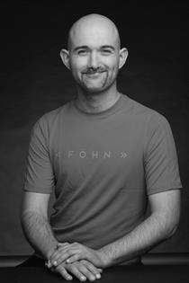

Infos über die Schülerlabore
Unser Angebot
Willkommen bei den Schülerlaboren der Hochschule Düsseldorf! Wir bieten außerschulische, interaktive Lernorte direkt auf unserem Campus in Derendorf an. Dieses Projekt wurde maßgeblich vom Fachbereich Medien ins Leben gerufen und wird in enger fachlicher Kooperation mit dem Fachbereich Architektur & Design umgesetzt.
Unser Ziel ist es, Schülerinnen und Schülern einen praxisnahen Zugang zu relevanten Zukunftsthemen zu ermöglichen – von Künstlicher Intelligenz und Digitalisierung bis hin zu kreativer Medienproduktion, Architektur und nachhaltigem Design. Statt Frontalunterricht steht bei uns das eigene Ausprobieren und Erleben im Vordergrund.
Unser Team
Hinter den Schülerlaboren steht ein engagiertes interdisziplinäres Team aus Lehrenden, wissenschaftlichen Mitarbeitenden und Studierenden, die die Kurse entwickeln und betreuen.
Nada Ilic – Wissenschaftliche Mitarbeiterin
nada.ilic@hs-duesseldorf.de
Markus Wolfschläger – Wissenschaftlicher Mitarbeiter
markus.wolfschlaeger@hs-duesseldorf.de
Till Harder – Gastdozent
till.harder@hs-duesseldorf.de
Dominik Dörr – Wissenschaftlicher Mitarbeiter
dominik.doerr@hs-duesseldorf.de

Marvin Middelhoff – Wissenschaftliche Hilfskraft
marvin.middelhoff@hs-duesseldorf.de